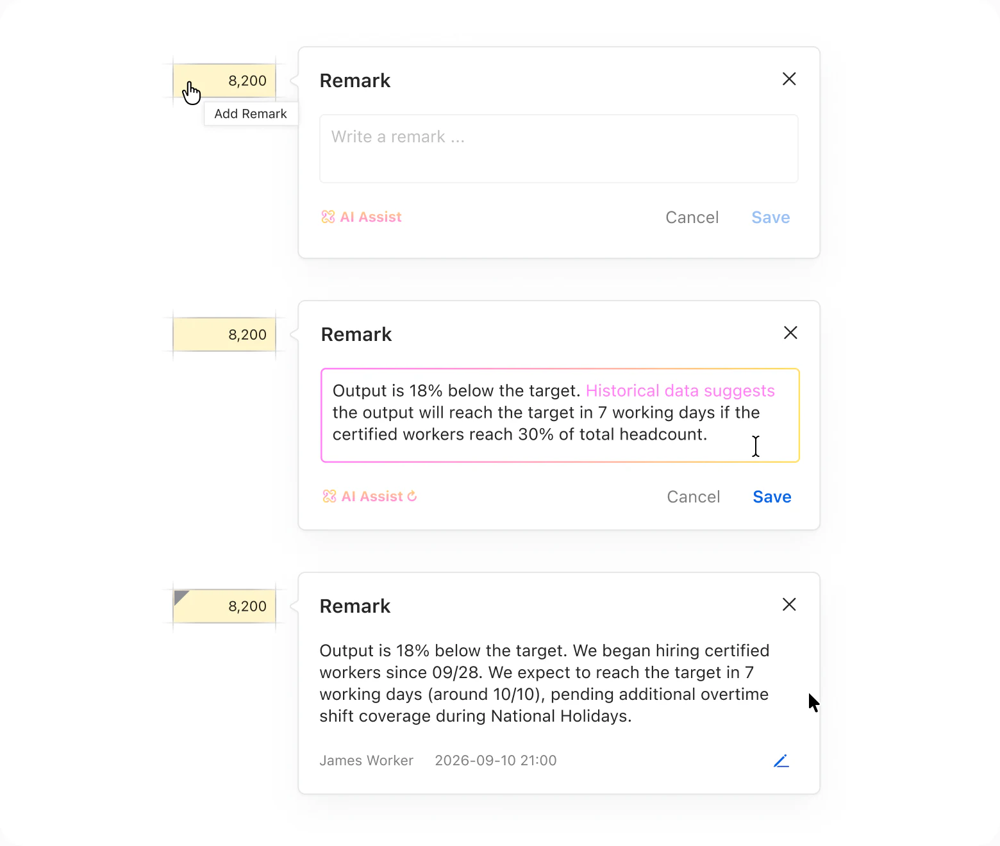
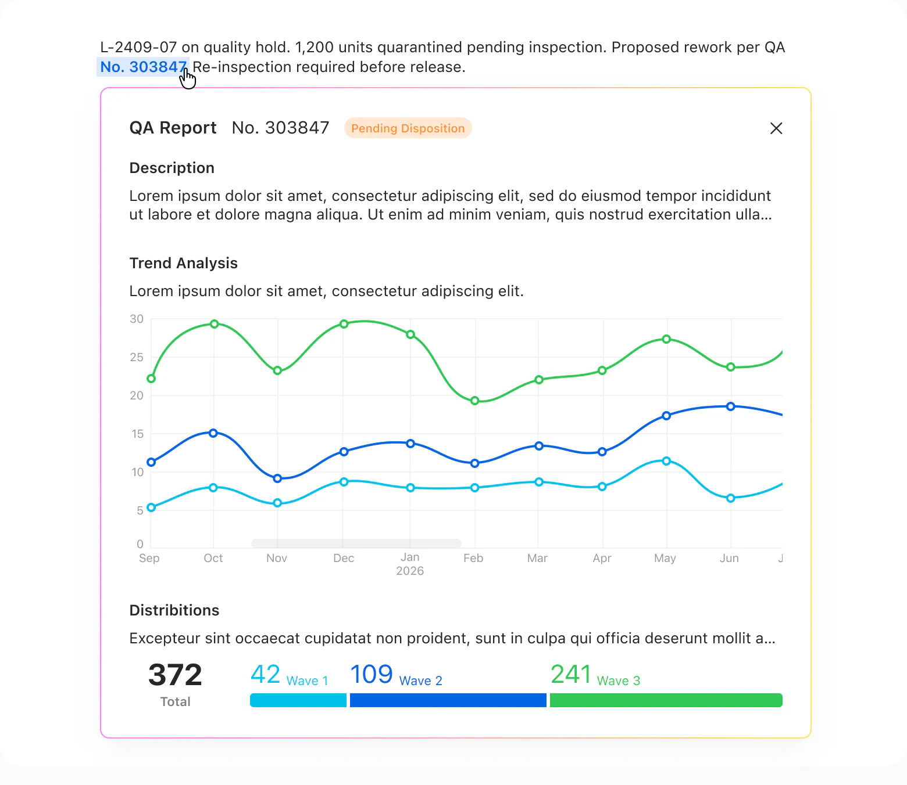
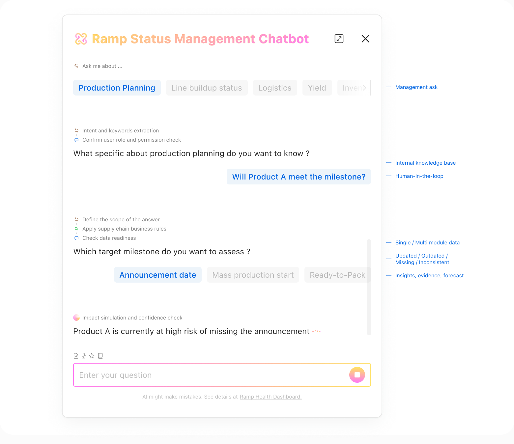
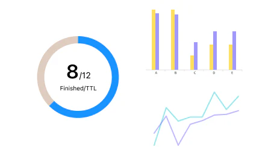
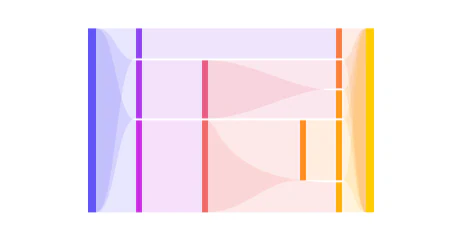
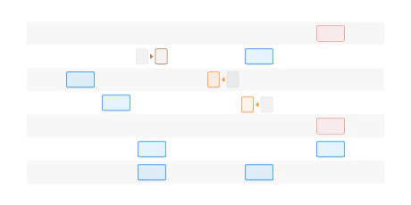
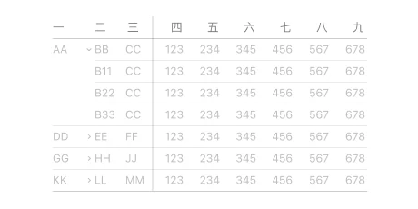
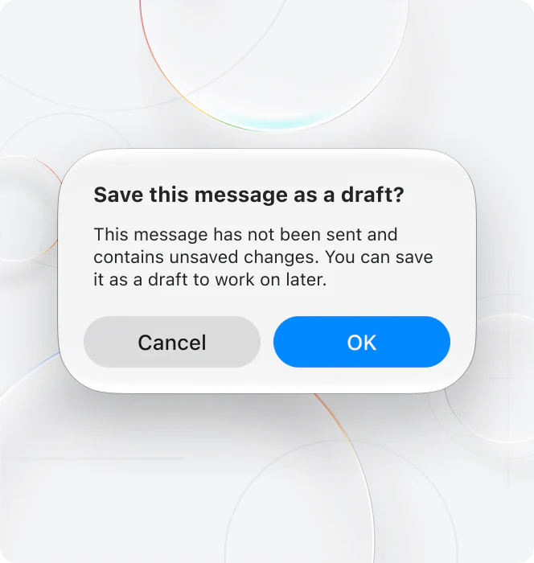
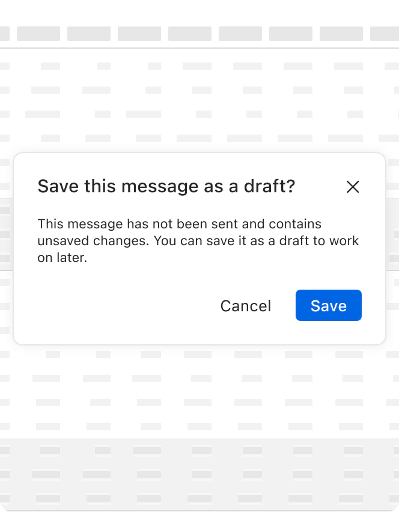
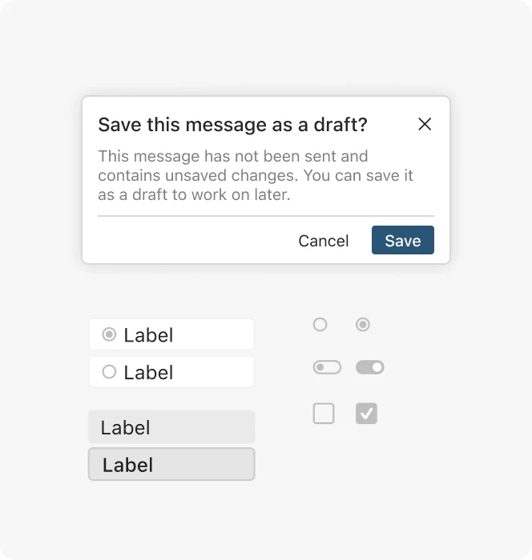

在进行数据评注时，不再需要手动查询历史信息， AI 提供历史数据、相关材料辅助用户进行数据评注。

复杂 B2B · 企业级 UX · 数据密集型产品 · AI UX
* 本案例重点展示设计过程与决策思路，不涉及保密细节。
提产数据管理系统是一个面向苹果内部供应链新产品提产爬坡（Ramp）阶段的数据监控管理平台：它把原本散落在邮件、Excel、离线文档和各部门系统中的十余个模块数据，统一整合为实时更新、跨产品可视的整体 Ramp 状态数据面板 —— 让负责不同模块的运营经理实时协同与高效汇报，让管理层一眼看清预警和风险，把数据更新的频率从“周”压缩到“分钟”。
我作为 UI/UX 设计师，早期独立主导系统页面架构与总览首页设计，后期与另一位设计师并行合作完成所有模块的设计扩展，并配合开发落地。
每款苹果新产品在正式发售前，需要经历 Ramp（提产爬坡）阶段 —— 新产品从小批量试产过渡到全面量产的窗口期，在此阶段产量与良率逐步提升，直至达到目标产能与预期的出货能力。
当异常未能被及时发现并达成跨团队协同处理，其影响可能在下游被不断放大。因此“实时可见 + 跨团队协同”成为产品存在的核心原则。
组件质量问题未及时追溯返工 / 报废 / 赔偿
产线架设延迟未及时处理产能 / 生产计划偏离
交付预测偏差未及时识别转运资源错配 / 额外成本
在提产数据管理系统建立之前，各业务模块的运营经理分别维护 Ramp 期间的关键数据指标，并通过各个模块沿用的方式向上汇报。管理层看到的是某个时间点的“静态快照”，而非实时的全局视图，难以第一时间把控整体状况、识别跨模块风险。
相关数据被折叠在多个、多层级的 Excel 文档中
不同部门分别管理各自的数据库
部分数据和汇报方式停留在 PM 个人手中
关键问题、异常信息靠邮件往来，不及时、难回溯、易刷屏
跨部门取数据需要找人、找权限
人工汇总至 100+ 页报告，按周向上汇报
这个提产数据管理系统由多部门、多角色共同使用，因此 UX 设计须同时服务「每天详细研究数据的人」和「快速扫读做决策的人」。
用户类型 A · 管理层“每个产品的 Ramp 进展如何？风险在哪里？接下来需要关注什么？”
用户类型 B · 日常工作团队查看对应模块数据，快速标记异常，准确预测上下游影响，快速向上汇报。
项目中的 AI 具备了理解主要业务概念的能力。所以在对应功能的设计上，我会综合考虑哪些操作需要人手工触发，哪些数据是 AI 可以自行生成的。
在进行数据评注时，不再需要手动查询历史信息， AI 提供历史数据、相关材料辅助用户进行数据评注。

当用户选取特定含义序列号时，AI 调用业务逻辑为用户展示业务数据，但不进行其他操作。

在对话式 AI 场景中， AI 占据引导位，帮助用户理解归纳和理解跨数据源的业务情况。

目标不是让所有模块使用完全相同的 UI 组件，而是在系统层面保持风格一致，同时允许不同业务领域表达自身的数据逻辑。
产线架设
通过可视化进度条和状态图表，展示计划架设产线数、当前架设进度和当前在产产线。

质量暂扣
用流程图视觉化展示涉及质量暂扣的零部件影响范围和环节。

关键里程碑
围绕发售相关日期组织供应链的其他关键里程碑，并展示里程碑的变更记录与关键日期提醒。

关键部件数据
合并重复字段，按照业务的不同层级对应展现数据列表。

不同业务源系统启用年代不同，视觉风格各异
管理系统的设计语言既没有照搬 Apple 桌面系统的 UI，也没有直接套用内部业务系统的风格：前者存在感太强，后者太过沉闷。最终方案在两者之间取了平衡：沿用已有系统中反复出现的组件，降低用户的学习成本；同时在颜色、空间、图表的使用上更灵活，帮助用户在大量数据中更快地分辨和定位信息。
Apple 桌面操作系统 UI
UI 存在感强，放进数据密集的界面里，会和数据争夺注意力。

平衡：提产数据管理系统设计语言

已有内部业务系统设计风格
视觉风格偏沉闷，在处理大量跨业务模块的数据时，很容易让人产生视觉疲劳。

不同模块业务数据间存在依赖关系
通过与 PM 沟通业务内容和逻辑，我了解到关键时间里程碑（Key Milestones）是提产阶段中最先确定、并在整个过程中持续更新的数据，直接影响其他模块的进度安排。
管理层需要通过周汇报来了解供应链数据
工厂生产状态实时变化，但数据需要经对接负责人逐次确认并汇总成汇报文档，导致管理层对异常与进展的掌控存在滞后。在提产数据管理系统中，一线（working level）用户可随时查看工厂同步过来的实时数据；快速确认，该版本数据即同步给管理层（management）用户。
业务数据根据来源，按照文档顺序进行汇报
提产数据根据工厂组织生产的逻辑被划分为三个阶段。相比线性汇报文档，提产数据管理系统可以根据需要在不同业务模块数据之间进行交叉查看。
零散数据
以 Summary 页面作为入口，展示所有进入提产阶段的产品。主要服务于部门负责人，帮助他们快速扫描整体状态，而非阅读每一个运营细节。
规划期 — 独立主导
独立负责全部设计决策
扩展期 — 双设计师并行
我负责其中 10 个模块，并与第二位设计师协同
在产品经理的带领下，先搞清楚各个业务模块需要展示的核心信息，以及业务人员在做 Ramp 汇报时哪些步骤经常需要反复来回操作。然后把关键信息做成清晰的页面，把重复的操作变成自动完成。
项目里包含十多个子模块，我选择从所有模块都需要的总览（Summary）页面开始做。这样能更快获得所有模块负责人对设计风格的初步认可。之后再根据每个子业务模块的具体需求逐步完善。
设计时跟每个业务模块负责人一起确认：既要保留供应链原始数据的样子，又要让界面美观易读，在两者之间找到动态平衡。
在设计中模拟业务人员常做的任务，找到适合 AI 落地的页面场景并统一视觉展示。对应功能设计包括业务人员对数据进行评注时，AI 根据历史数据、其他模块信息等生成辅助信息；根据锚点概念，联想相关数据并跳转到对应模块；关于提产情况综合查询的对话机器人等。
离开项目之后，这套适用于供应链密集数据的设计风格和组件复用规则还在运转。组件跟着业务需求一起开发和迭代，新需求能持续快速落地，也避免组件库脱离业务。